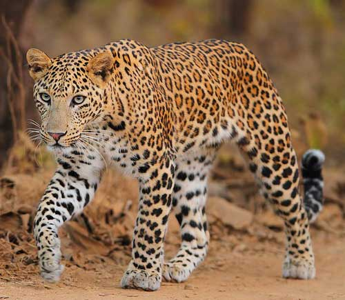

Леопарды - самые мелкие представители группы больших кошек, их опережают ягуары, львы и тигры, средний рост леопарда до плеч около 70 сантиметров. А длина тела леопардов составляет от 100 до 150 см. Леопарды - искусные быстрые охотники и ловкие падальщики, их приспосабливаемости к различным видам природных условий могут позавидовать многие хищники. Предпочтение эти большие кошки отдают влажным местам, где поблизости есть водоёмы, а вот наибольшее количество леопардов обитает в Африке и Азии. Леопарды - искусные быстрые охотники и ловкие падальщики, их приспосабливаемости к различным видам природных условий могут позавидовать многие хищники. Предпочтение эти большие кошки отдают влажным местам, где поблизости есть водоёмы, а вот наибольшее количество леопардов обитает в Африке и Азии.
